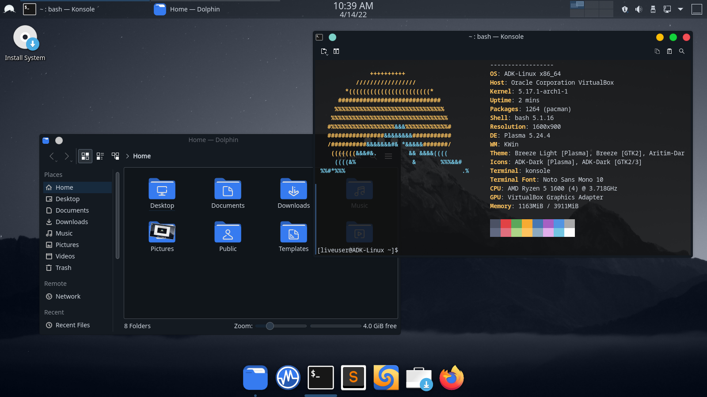

Welcome to ADK-Linux.
ADK-Linux is a Linux distro created with a simple plasma theme.

What is ADK-Linux?
KDE Plasma Desktop
ADK-Linux is a linux distro based on Arch-linux with KDE Plasma Desktop, in order to give you
the best cutting edge experience.
Development Software
This distro comes with development programs like Sublime Text, Meld
and Kompare.
Arch Linux Based
Built on Arch Linux, ADK-Linux follows the KISS principles, keeping the base system minimal yet flexible.
Plasma Desktop
ADK-Linux uses Plasma Desktop with a simple dark theme.
Based around Aritim-Dark desktop layout, or install any theme you wish.
Based around Aritim-Dark desktop layout, or install any theme you wish.
KDE Plasma (default)
The next generation desktop for Linux.
Aritim-Dark
I tested ADK-Linux and installed it. Runs like a great
with no issues at all.
Want to boost your workflow?
Join the thousand people who have downloaded ADK-Linux.
Try it now in a live ISO - no need to install.